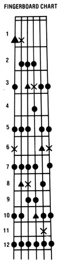

Homegrown Music
Marc Bristol-a homegrown musician who performs regularly throughout the Pacific Northwest-began sharing his knowledge of do-it-yourself entertainment with MOTHER readers back in issue 50. Marc's columns have touched on everything from access information for recorded music to detailed instructions on how to make your own instruments. Marc is interested in hearing any suggestions, comments, or questions you may have about the subject of do-it-yourself music, and he'll try to write about requested topics in future columns. Address your correspondence-for this column and this column only-to Marc Bristol, Dept. TMEN, 18520 312th Avenue N.E., Duvall, Washington 98019.
Marc Bristol
I can't say I'm surprised that my article in issue 72, "Learning to Play the Guitar", produced more response from readers of this column than any other piece I've written for MOTHER . . . but I can say I'm mighty encouraged-and gratified-to know that so many of you want more information. So here, without further ado (aside from saying thanks, everybody, for all the kind comments and super suggestions . . . keep 'em coming!) are yet more helpful hints for folks who want to get down with the gitbox.
BARGAIN HUNTING
A number of people wrote to ask how much the quality of a guitar might affect a person's ability to learn to play. Well, better instruments are certainly more enjoyable to pick . . . and chances are a novice will learn more quickly if he or she happens to be having fun at the same time. But I hasten to add that it's not-repeat, not-necessary to pay a small fortune to get a good axe.
There's a virtual glut of used medium quality guitars on the market today-thanks to the popularity of the instrument over the past couple of decades-and as a result, prices have come down to the point where it's usually possible to find a good secondhand model (many are Japanese-made) for just over $100.
And if that amount is still higher than you want to go, head for local garage sales and flea markets. I know of people who've found decent, older American-made guitars (brands like Kay and Harmony) in such places for as little as-are you ready for this? Jive bucks! [EDITOR'S NOTE: For tips on `fine tuning" a bargain basement guitar, turn to page 62.J
GUITAR LESSONS?
Some of you also asked whether formal instruction can be of much help to the beginning plucker, and-if so-how one should go about finding and choosing a good teacher. Well, I've never taken lessons myself, but I have acquired lots of know-how simply by asking better players to give me pointers. So if you hear someone picking a song or riff-or using a technique that you'd like to learn, don't be afraid to ask that person to show you what he or she's doing . . . and to offer to pay for the lesson if you think the situation calls for it.
Of course, "real" instruction can be a big help, too .. . particularly for folks who don't know other local players. Music stores and private tutors around my home area charge about $7.50 per half-hour lesson, and usually ask for the fee in advance (so the instructor won't get burned if someone doesn't show up for an appointment). It's generally possible either to take just a single lesson or to set up a regular schedule: one half-hour session every couple of weeks, for example ... or a one-hour bout every month . . . or whatever arrangement suits the student's needs and budget best.
It's a good idea, when you're shopping around, to let the prospective teacher know the kind of music you'd like to learn (jazz, folk, blues, ragtime, or whatever) and/or the specific performers whose styles you admire. You're much more likely to find an instructor who can take you where you want to go if you state your musical preferences right up front.
Incidentally, how-to book-and-record sets can also be valuable "teachers". Of course, you might still need to have someone watch what you're doing and give you tips from time to time, particularly when you're just starting out . . . but for those folks who have the discipline necessary for self-education, or those who want to add to what they're learning from a teacher or other players, such aids can be very helpful. You'll find a number of sources for self-instruction materials described in my columns in issues 55, 63, and 74.
PICKIN' . . .
If you read the section on guitar tablature in MOTHER NO. 72, you may have noticed (as did several perceptive people who wrote to me) that I mentioned some pickin' techniques . . . but failed to define those terms. Well, herewith my apologies for the earlier omission-is a review of some methods referred to in that column.
[1] A hammer-on is performed by striking a note and then rapidly bringing a finger down on the vibrating string, pressing it to any given fret, so that the pitch of the original note changes.
[2] A pull-off is essentially the same thing in reverse. Simply play a fretted note and then immediately pull your finger off the string, with a quick plucking motion . . . by doing so, you'll cause another note to sound.
[3] A slide involves pressing a finger down on a string at any given fret, striking the note, and then, without lifting the digit, sliding that finger along the wire-either up or down the neck-to a different fret . . . causing the note to change from its original pitch to one that's either higher or lower.
Another technique that's-frequently used by blues players is bending. Play a fretted note and with your finger still pressed to that fret-push the string hard toward you along the fingerboard. You'll produce a whining, "bluesy" tone. (Some players the amazing B.B. King, for one-can bend a note, using slinky strings on an electric guitar, through as much as two whole steps on the scale . . . which is equivalent, in musical range, to four frets on the fingerboard!)
One reader (I assume from the letter that this individual is a relatively advanced player) would like to know whether there's a particular pattern of notes used when playing lead breaks to bluegrass songs. Well, generally speaking, a break for any given song is based on the same scale of notes used in the melody. So if you know the chord positions for a tune, you should be able to pick out the individual melody notes close to those positions . . . and build a break based on the scale of sounds you find there.
Actually, though, I can give you a tip that'll make picking up, say, a Doc Watson rif easier. My friend Jeff Smith once showed me a fingerboard chart that indicates all the "live"or usable-fretted notes that can be put together for improvising blues breaks when you're playing in the key of E . . . as well as those useful in creating boogie-woogie rifFs in the key of G.
As you can see on the accompanying chart, the guitar provides a generous choice of good notes for any given key. Remember, though, it's always best to use the fretted notes closest to whichever chord positions you're playing. And incidentally, the notes indicated by X's are particularly important and frequently used when playing city-style blues in E . . . while those represented by triangles are especially useful for picking boogie-woogie and bass lines in G.
The real beauty of this diagram, though, is that it can be adapted to other keys, too, simply by moving the entire pattern so that the uppermost notes shown on the fingerboard drawing start on whichever fret would give you the "key note" on the first and sixth strings.
If you wanted to play a break in the key of A, for example, you could find the "live" notes available to you by visualizing the pattern as though the fifth fret were the nut of the guitar (and therefore the top of the dia gram). The pattern would then follow consistently: If you redrew this diagram for the key of A, then, the sixth fret would show the same notes indicated on the second fret in our key-of-E illustration . . . the seventh fret would show the same notes indicated on the third fret here . . . and so on right down to the twelfth fret. The bottom five fingerings shown in the key-of-E pattern would become the top five fingerings for the key-of-A diagram. And, of course, on down the fingerboard-past the twelfth fret-the chart would simply repeat itself.
Now that may be a somewhat confusing set of instructions, but those of you with a penchant for figuring out the intricacies of the guitar should find the whole thing interesting as well as useful .
. . . JAMMIN' . . .
One of MOTHER's fledgling guitarist readers asks whether there's a way to "hear"-in other words, identify by ear which chords are being played by other musicians in a jam session. Well, long-time pickers can usually recognize almost any chord from only the sound . . . but when you're trying to learn, there's no reason not to simply ask the other players what key and chords they're using for any given song.
It's a good idea, too, to seat yourself so that you can see how your jam-mates' hands are positioned. Above all, though, remember that learning takes time: After you've put some experience under your belt, you'll reach a point where you not only can tell which chords are being played . . . but also will be able to anticipate when and where chord changes will occur in a song.
Sometimes, unfortunately, you may find yourself in a session with a person who delights in complex improvisation . . . regardless of whether the other people involved can follow along. An individual like that is ignoring the fact that the idea of jamming is to play together. So if you ever notice that the folks around you are having a hard time keeping up, be sure to slow down or change to a simpler piece. On the other hand, if you happen to be the one who's lagging behind while all the others seem to be moving right along, maybe you should let those folks play through their song while you try your hand at using your guitar as a bongo-like drum. (I'm serious . . . one of the best musicians I've heard lately performs percussion breaks on his flat-top acoustic . . . and flamenco players frequently pound out a rhythm as an accent to their distinctive musical style.)
. . . AND MORE
I've just barely begun to cover the subject of playing the guitar . . . so keep an eye on future columns for more information. Meanwhile, let me hear from you if you have any questions or suggestions.
In fact, I'd like to invite all of you to take part in an informal reader survey I'm conducting (starting right now). I'm interested in finding out what your favorite kinds of music are (bluegrass, swing, country rock, old-time country, jug band, rockabilly, country blues, solo guitar, Irish, folk, etc.) . . . and which albums you like most within any one (or all) of those categories. So if you've a mind to, sit down and write me a list of your all-time favorites. I'd enjoy hearing which singers and songwriters you think are "the best", too. And if I get enough response to make this survey worthwhile, I'll be sure to report the results in an upcoming issue.
Would you believe that I've been writing this column for THE Mother Earth News for more than four years now? It's true. And along the way I've accumulated so much information-only some of which I've been able to cover in these pages-that I've gone ahead and teamed up with a publisher . . . and plan to put out a full-fledged book called Homegrown Music. The volume won't be just a rehash of what you've seen in this magazine, either. We'll be including more in-depth instruction . . . a special song section containing some of my own tunes with chord diagrams and tablature for guitar, mandolin, banjo, and other down-home instruments . . . lots of photos and illustrations . . . sources for mail order instruments and supplies . . . and more.
Of course, the project is still strictly in the planning stages. We're racing like mad in an attempt to have the work published and available before the Christmas season, but I can't make any promises at this point. I'll try to keep you up to date, but please don't go sending me any orders just yet!
|
 |
|
|